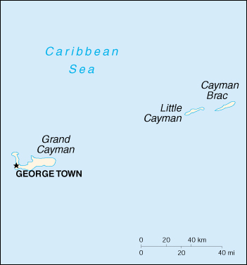

(overseas territory of the UK)
|
Cayman Islands (overseas territory of the UK) |
|
| Introduction Geography People Government Economy Communications Transportation Military Transnational Issues | ||
|  | ||
| Cayman Islands | Introduction | Top of Page |
| Background: | The Cayman Islands were colonized from Jamaica by the British during the 18th and 19th centuries. Administered by Jamaica from 1863, they remained a British dependency after 1962 when the former became independent. |
| Cayman Islands | Geography | Top of Page |
| Location: | Caribbean, island group in Caribbean Sea, nearly one-half of the way from Cuba to Honduras |
| Geographic coordinates: | 19 30 N, 80 30 W |
| Map references: | Central America and the Caribbean |
| Area: |
total:
259 sq km
land: 259 sq km water: 0 sq km |
| Area - comparative: | 1.5 times the size of Washington, DC |
| Land boundaries: | 0 km |
| Coastline: | 160 km |
| Maritime claims: |
exclusive fishing zone:
200 NM
territorial sea: 12 NM |
| Climate: | tropical marine; warm, rainy summers (May to October) and cool, relatively dry winters (November to April) |
| Terrain: | low-lying limestone base surrounded by coral reefs |
| Elevation extremes: |
lowest point:
Caribbean Sea 0 m
highest point: The Bluff 43 m |
| Natural resources: | fish, climate and beaches that foster tourism |
| Land use: |
arable land:
0%
permanent crops: 0% permanent pastures: 8% forests and woodland: 23% other: 69% (1993 est.) |
| Irrigated land: | NA sq km |
| Natural hazards: | hurricanes (July to November) |
| Environment - current issues: | no natural fresh water resources; drinking water supplies must be met by rainwater catchment |
| Geography - note: | important location between Cuba and Central America |
| Cayman Islands | People | Top of Page |
| Population: | 35,527 (July 2001 est.) |
| Age structure: |
0-14 years:
22.21% (male 3,807; female 4,084)
15-64 years: 69.74% (male 12,102; female 12,676) 65 years and over: 8.05% (male 1,318; female 1,540) (2001 est.) |
| Population growth rate: | 2.12% (2001 est.) |
| Birth rate: | 13.79 births/1,000 population (2001 est.) |
| Death rate: | 5.15 deaths/1,000 population (2001 est.) |
| Net migration rate: |
12.58 migrant(s)/1,000 population (2001 est.)
note: major destination for Cubans trying to migrate to the US |
| Sex ratio: |
at birth:
0.86 male(s)/female
under 15 years: 0.93 male(s)/female 15-64 years: 0.95 male(s)/female 65 years and over: 0.86 male(s)/female total population: 0.94 male(s)/female (2001 est.) |
| Infant mortality rate: | 10.16 deaths/1,000 live births (2001 est.) |
| Life expectancy at birth: |
total population:
79.03 years
male: 76.24 years female: 81.43 years (2001 est.) |
| Total fertility rate: | 2.04 children born/woman (2001 est.) |
| HIV/AIDS - adult prevalence rate: | NA% |
| HIV/AIDS - people living with HIV/AIDS: | NA |
| HIV/AIDS - deaths: | NA |
| Nationality: |
noun:
Caymanian(s)
adjective: Caymanian |
| Ethnic groups: | mixed 40%, white 20%, black 20%, expatriates of various ethnic groups 20% |
| Religions: | United Church (Presbyterian and Congregational), Anglican, Baptist, Roman Catholic, Church of God, other Protestant |
| Languages: | English |
| Literacy: |
definition:
age 15 and over has ever attended school
total population: 98% male: 98% female: 98% (1970 est.) |
| Cayman Islands | Government | Top of Page |
| Country name: |
conventional long form:
none
conventional short form: Cayman Islands |
| Dependency status: | overseas territory of the UK |
| Government type: | British crown colony |
| Capital: | George Town |
| Administrative divisions: | 8 districts; Creek, Eastern, Midland, South Town, Spot Bay, Stake Bay, West End, Western |
| Independence: | none (overseas territory of the UK) |
| National holiday: | Constitution Day, first Monday in July |
| Constitution: | 1959, revised 1972 and 1992 |
| Legal system: | British common law and local statutes |
| Suffrage: | 18 years of age; universal |
| Executive branch: |
chief of state:
Queen ELIZABETH II (since 6 February 1952); Governor and President of the Executive Council Peter SMITH (since 5 May 1999)
head of government: Kurt TIBBETTS (since November 2000) cabinet: Executive Council (three members appointed by the governor, four members elected by the Legislative Assembly) elections: none; the monarch is hereditary; the governor is appointed by the monarch |
| Legislative branch: |
unicameral Legislative Assembly (18 seats, three appointed members and 15 elected by popular vote; members serve four-year terms)
elections: last held 8 November 2000 (next to be held NA November 2004) election results: percent of vote - NA%; seats - NA |
| Judicial branch: | Summary Court; Grand Court; Cayman Islands Court of Appeal |
| Political parties and leaders: | there are no formal political parties but the following loose groupings act as political organizations; National Team; Democratic Alliance; Team Cayman |
| Political pressure groups and leaders: | NA |
| International organization participation: | Caricom (observer), CDB, Interpol (subbureau), IOC, UNESCO (associate) |
| Diplomatic representation in the US: | none (overseas territory of the UK) |
| Diplomatic representation from the US: | none (overseas territory of the UK) |
| Flag description: | blue, with the flag of the UK in the upper hoist-side quadrant and the Caymanian coat of arms on a white disk centered on the outer half of the flag; the coat of arms includes a pineapple and turtle above a shield with three stars (representing the three islands) and a scroll at the bottom bearing the motto HE HATH FOUNDED IT UPON THE SEAS |
| Cayman Islands | Economy | Top of Page |
| Economy - overview: | With no direct taxation, the islands are a thriving offshore financial center. More than 40,000 companies were registered in the Cayman Islands as of 1997, including almost 600 banks and trust companies; banking assets exceed $500 billion. A stock exchange was opened in 1997. Tourism is also a mainstay, accounting for about 70% of GDP and 75% of foreign currency earnings. The tourist industry is aimed at the luxury market and caters mainly to visitors from North America. Total tourist arrivals exceeded 1.2 million visitors in 1997. About 90% of the islands' food and consumer goods must be imported. The Caymanians enjoy one of the highest outputs per capita and one of the highest standards of living in the world. |
| GDP: | purchasing power parity - $930 million (1997 est.) |
| GDP - real growth rate: | 4.9% (1999 est.) |
| GDP - per capita: | purchasing power parity - $24,500 (1997 est.) |
| GDP - composition by sector: |
agriculture:
1.4%
industry: 3.2% services: 95.4% (1994 est.) |
| Population below poverty line: | NA% |
| Household income or consumption by percentage share: |
lowest 10%:
NA%
highest 10%: NA% |
| Inflation rate (consumer prices): | 3% (1998) |
| Labor force: | 19,820 (1995) |
| Labor force - by occupation: | agriculture 1.4%, industry 12.6%, services 86% (1995) |
| Unemployment rate: | 4.1% (1997) |
| Budget: |
revenues:
$265.2 million
expenditures: $248.9 million, including capital expenditures of $NA (1997) |
| Industries: | tourism, banking, insurance and finance, construction, construction materials, furniture |
| Industrial production growth rate: | NA% |
| Electricity - production: | 330 million kWh (1999) |
| Electricity - production by source: |
fossil fuel:
100%
hydro: 0% nuclear: 0% other: 0% (1999) |
| Electricity - consumption: | 306.9 million kWh (1999) |
| Electricity - exports: | 0 kWh (1999) |
| Electricity - imports: | 0 kWh (1999) |
| Agriculture - products: | vegetables, fruit; livestock, turtle farming |
| Exports: | $1.5 million (1998) |
| Exports - commodities: | turtle products, manufactured consumer goods |
| Exports - partners: | mostly US |
| Imports: | $507.6 million (1998) |
| Imports - commodities: | foodstuffs, manufactured goods |
| Imports - partners: | US, Trinidad and Tobago, UK, Netherlands Antilles, Japan |
| Debt - external: | $70 million (1996) |
| Economic aid - recipient: | $NA |
| Currency: | Caymanian dollar (KYD) |
| Currency code: | KYD |
| Exchange rates: | Caymanian dollars per US dollar - 0.83 (3 November 1995), 0.85 (22 November 1993) |
| Fiscal year: | 1 April - 31 March |
| Cayman Islands | Communications | Top of Page |
| Telephones - main lines in use: | 19,000 (1995) |
| Telephones - mobile cellular: | 2,534 (1995) |
| Telephone system: |
general assessment:
NA
domestic: NA international: 1 submarine coaxial cable; satellite earth station - 1 Intelsat (Atlantic Ocean) |
| Radio broadcast stations: | AM 1, FM 5, shortwave 0 (1998) |
| Radios: | 36,000 (1997) |
| Television broadcast stations: | NA |
| Televisions: | 7,000 (1997) |
| Internet country code: | .ky |
| Internet Service Providers (ISPs): | 16 (2000) |
| Internet users: | NA |
| Cayman Islands | Transportation | Top of Page |
| Railways: | 0 km |
| Highways: |
total:
406 km
paved: 304 km unpaved: 102 km |
| Waterways: | none |
| Ports and harbors: | Cayman Brac, George Town |
| Merchant marine: |
total:
106 ships (1,000 GRT or over) totaling 1,656,452 GRT/2,643,036 DWT
ships by type: bulk 21, cargo 5, chemical tanker 27, container 4, liquefied gas 1, petroleum tanker 13, refrigerated cargo 30, roll on/roll off 4, specialized tanker 1 note: includes some foreign-owned ships registered here as a flag of convenience: Cyprus 2, Denmark 2, Finland 1, Greece 11, Norway 3, UK 3, US 3 (2000 est.) |
| Airports: | 3 (2000 est.) |
| Airports - with paved runways: |
total:
2
1,524 to 2,437 m: 2 (2000 est.) |
| Airports - with unpaved runways: |
total:
1
914 to 1,523 m: 1 (2000 est.) |
| Cayman Islands | Military | Top of Page |
| Military branches: | Royal Cayman Islands Police Force (RCIPF) |
| Military - note: | defense is the responsibility of the UK |
| Cayman Islands | Transnational Issues | Top of Page |
| Disputes - international: | none |
| Illicit drugs: | vulnerable to drug money laundering and drug transshipment to the US and Europe |
{kind=link}
{kind=link}